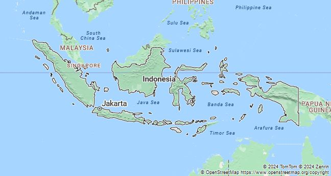
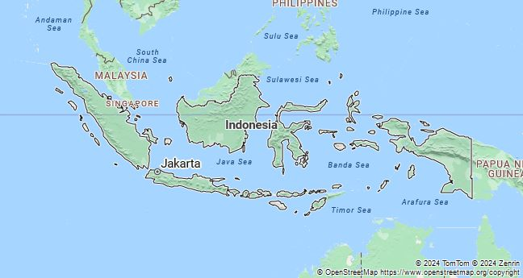
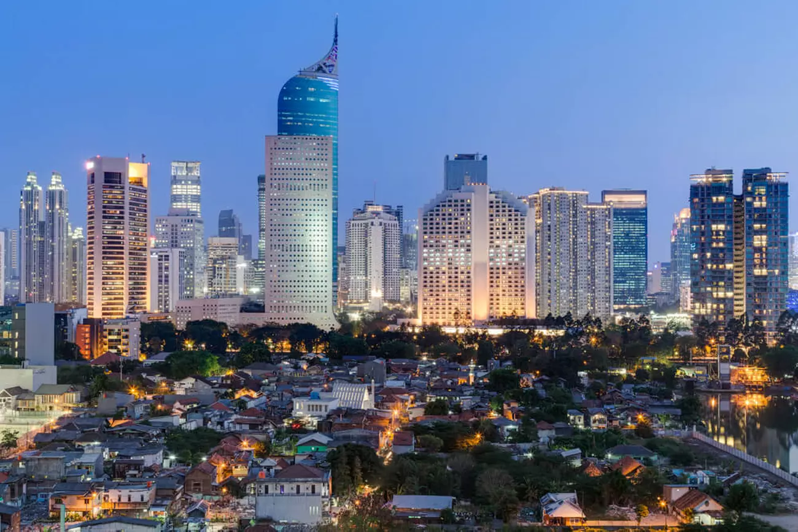

The Indonesia flag, also known as Sang Saka Merah Putin, Was officially adopted on august 17, 1945 three days after the end of world war ll, It consists of red and white colors and hasn't been changed since witch also includes that the flag was raised publicly for the first time during the proclamation of independence in Jakarta.


The area that is now Jakarta was originally inhabited by the Sundanese people and was part of the Kingdom of Sunda. The town was called Sunda Kelapa and served as an important trading port located at the mouth of the Ciliwung River. It connected the kingdom with traders from across Asia, including from India, China, and the Middle East.